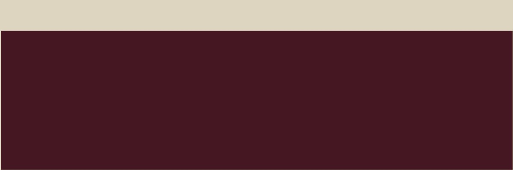 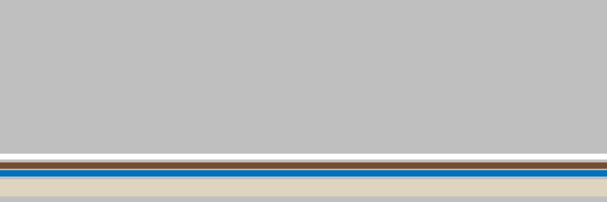
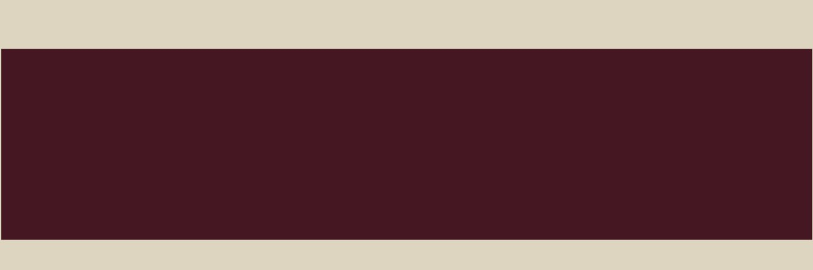 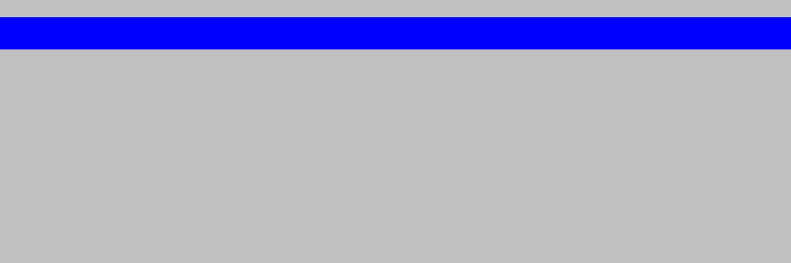 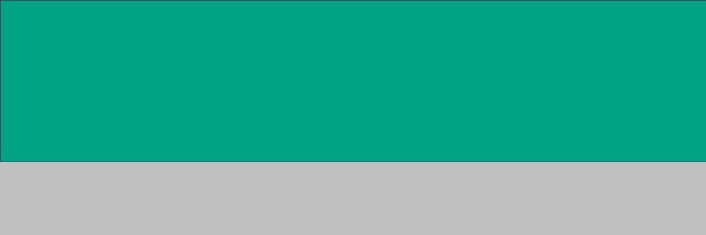 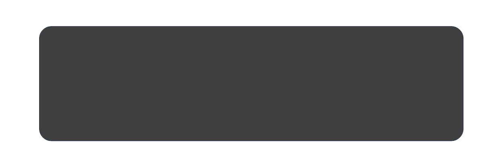
LEDシュミレーター
戻る
阪急神戸線:
特急 新開地
特急 高速神戸
特急 大阪梅田
通特 新開地
通特 高速神戸
通特 神戸三宮
通特 大阪梅田
準特 新開地
準特 高速神戸
準特 大阪梅田
急行 新開地
急行 神戸三宮
急行 大阪梅田
通急 神戸三宮
通急 大阪梅田
普通 新開地
普通 高速神戸
普通 神戸三宮
普通 夙川
普通 西宮北口
普通 塚口
普通 大阪梅田
普通 伊丹
普通 今津
普通 宝塚
普通 甲陽園
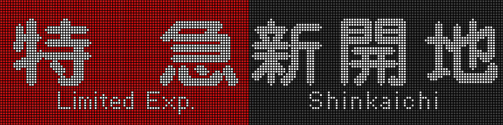
阪急宝塚線:
特日 日生中央
特日 大阪梅田
通特 大阪梅田
急行 宝塚
急行 雲雀丘花屋敷
急行 大阪梅田
準急 大阪梅田
普通 宝塚
普通 雲雀丘花屋敷
普通 川西能勢口
普通 池田
普通 石橋阪大前
普通 豊中
普通 大阪梅田
普通 箕面
阪急京都線:
快特 京都河原町
快特 大阪梅田
特急 京都河原町
特急 大阪梅田
通特 京都河原町
通特 大阪梅田
準特 京都河原町
準特 大阪梅田
急行 京都河原町
急行 大阪梅田
準急 京都河原町
準急 大阪梅田
普通 京都河原町
普通 桂
普通 高槻市
普通 茨木市
普通 淡路
普通 大阪梅田
普通 北千里
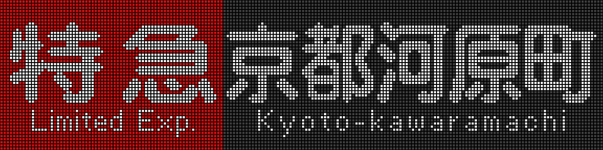
阪神本線:
直特(赤)
直特(黄)
特急
通特
準特
Ｓ特
快急(青)
快急(赤)
区急
急行(阪神)
急行(阪急)
通急(阪急)
普通(阪神)
普通(阪急)
阪神大阪梅田
大阪梅田
阪急大阪梅田
尼崎
甲子園
西宮
御影
石屋川
阪神神戸三宮
神戸三宮
阪急神戸三宮
元町
高速神戸
新開地
東須磨
須磨浦公園
東二見
霞ヶ丘
飾磨
姫路
西宮北口
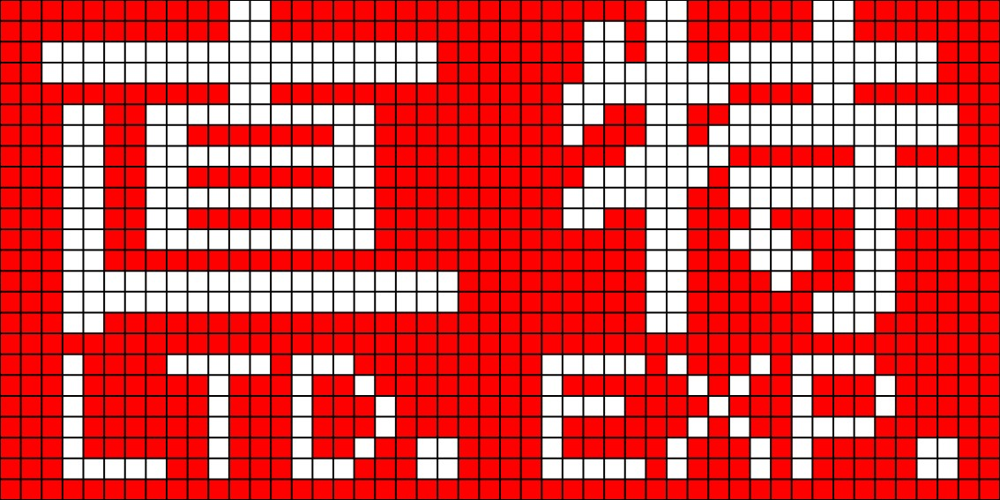
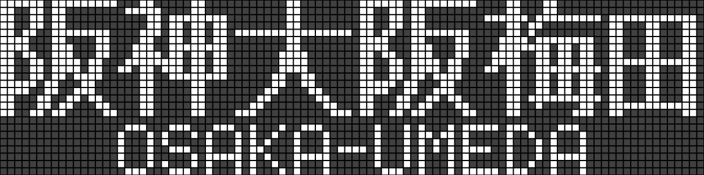
JR:
Ａ新快速
Ａ快速
Ａ普通
Ｂ新快速
Ｂ快速
Ｂ普通
Ｆ普通
Ｆ直通快速
Ｇ丹波路快速
Ｇ区間快速
Ｇ快速
Ｇ普通
Ｈ快速
Ｈ区間快速
Ｈ普通
Ｏ普通
Ｐ普通
Ｑ大和路快速
Ｑ区間快速
Ｒ紀州路快速
Ｒ区間快速
Ｒ快速
Ｓ関空快速
敦賀
敦賀・米原
近江塩津
近江今津
長浜
米原
野洲
草津
京都
高槻
吹田
新大阪
大阪
尼崎
甲子園口
神戸
須磨
明石
西明石
加古川
姫路
網干
播州赤穂
上郡
塚口
宝塚
新三田
篠山口
福知山
豊岡
城崎温泉
京橋
放出
四条畷
長尾
松井山手
京田辺
同志社前
木津
奈良
京橋
天王寺
桜島
奈良
加茂
加茂/五条
奈良/高田
奈良/五条
天王寺
鳳
東岸和田
熊取
日根野
関西空港
関空/和歌山
関空/海南
関空/湯浅
関空/御坊
和歌山
海南
御坊
紀伊田辺
白浜
新宮
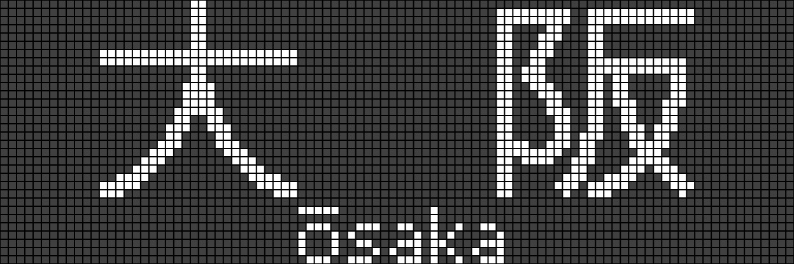
神戸電鉄:
急行
準急
普通
鈴蘭台
西鈴蘭台
志染
三木
小野
粟生
有馬温泉
岡場
道場南口
三田
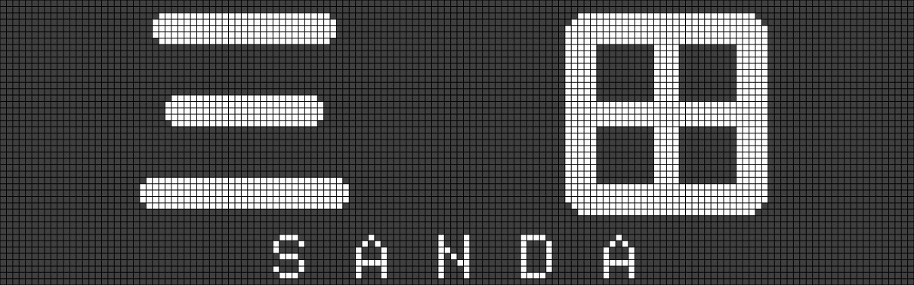
御堂筋線:
箕面萱野
千里中央
江坂
新大阪
中津
梅田
天王寺
あびこ
新金岡
なかもず
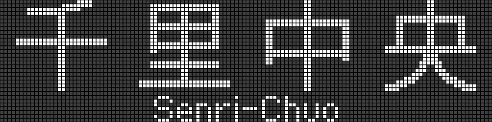
谷町線:
大日
都島
文の里
喜連瓜破
八尾南
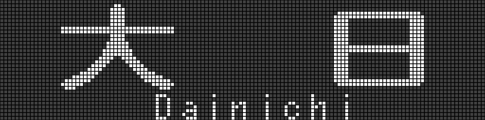
四つ橋線:
住之江公園
北加賀屋
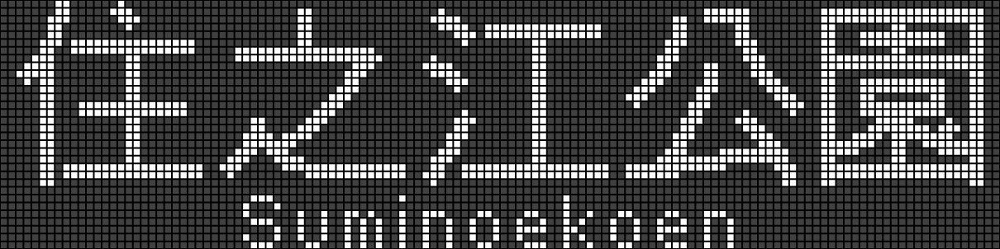
西神・山手線:
谷上
新神戸
名谷
西神中央
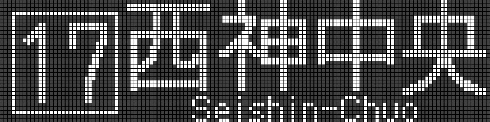
海岸線:
御崎公園
新長田
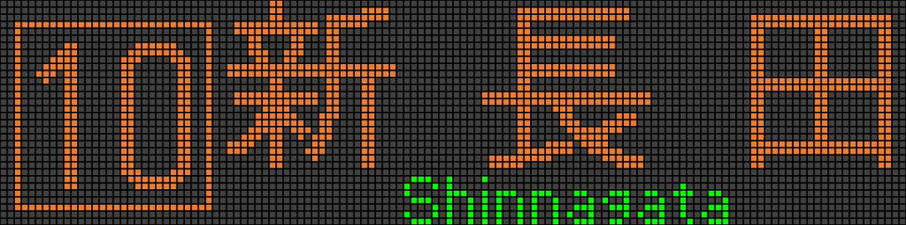
ポートライナー:
神戸空港
計算科学センター
中埠頭
北埠頭
 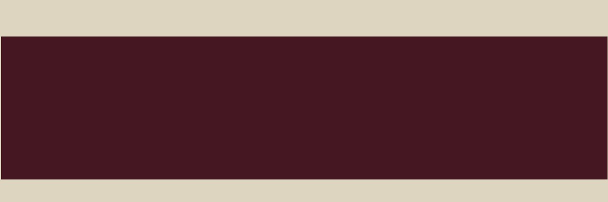
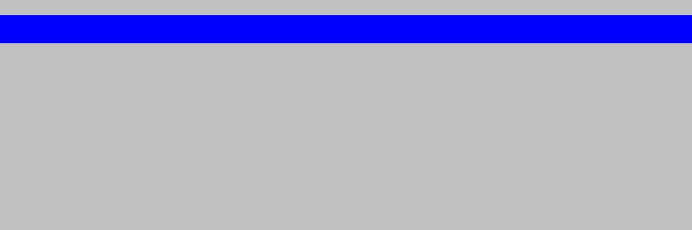
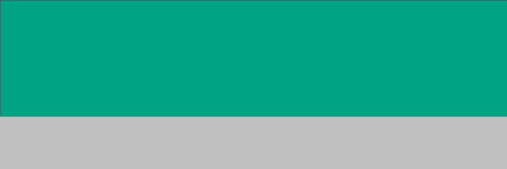
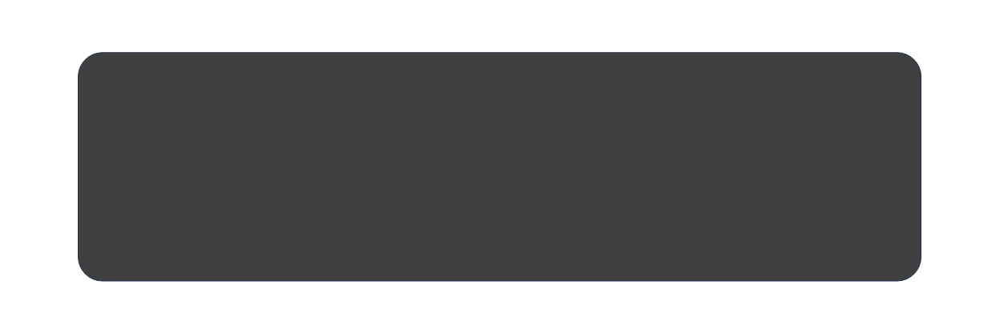
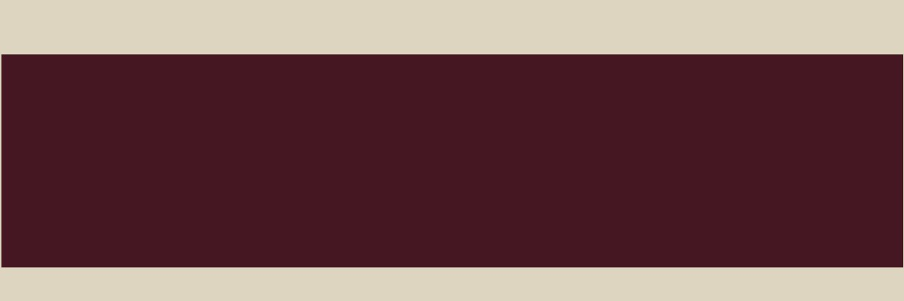
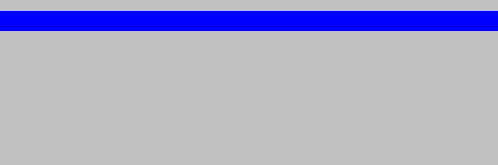
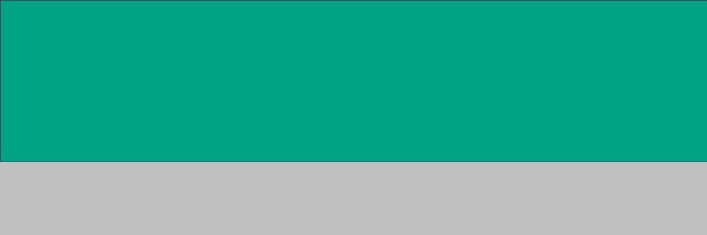
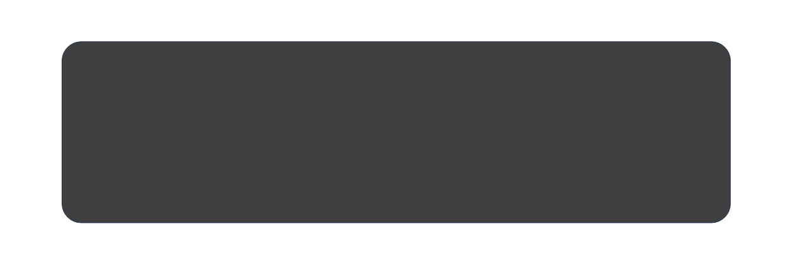